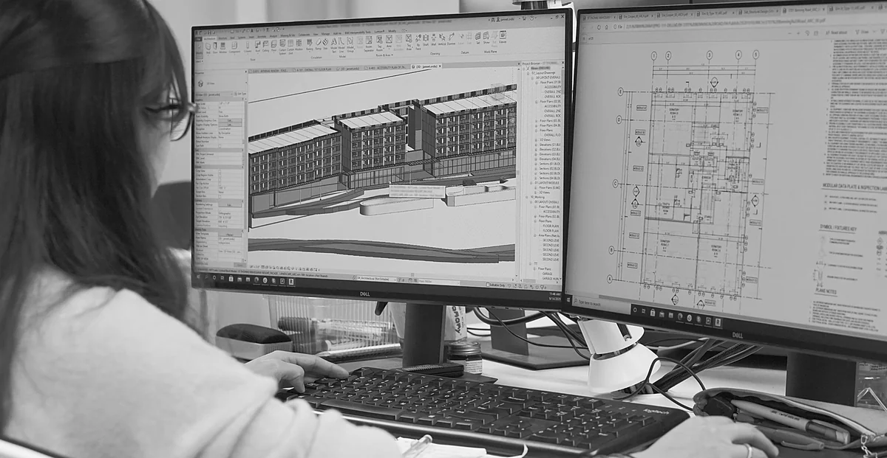

AROBOTIX is a construction technology company creating the neutral coordination and verification layer between the digital plan and the job site.
AROBOTIX Corp. is incorporated in Delaware, with its build team operating from Ho Chi Minh City, Vietnam. We come from inside the construction industry, not from outside it. The people behind AROBOTIX have spent years in building information modeling, design for manufacture and assembly, and virtual design and construction, the disciplines that decide whether a project runs clean or runs over.
We have seen first hand where the digital plan stops and the job site takes over, and how much gets lost in that gap. The plans are detailed. The crews are capable. What is missing is the layer that turns a precise model into coordinated, confirmed, and recorded work on the ground. AROBOTIX exists to close that gap.

We are not technologists guessing at construction. Our roots are in BIM, DfMA, and VDC, and the platform is shaped by how projects are actually delivered, not how they look on paper.
AROBOTIX coordinates and verifies. It does not take sides between vendors, and it does not replace the people who run the site. That neutrality is the product, and it is what makes the layer trustworthy.
AROBOTIX is incorporated, in active development, and engaged with one of Vietnam's largest general contractors on an upcoming pilot. There is a real team behind it. This is a company, not an experiment.
Construction is moving from documentation to execution, from manual coordination to verified, data-driven delivery. We intend to be the layer this next era of building runs on. We start in Vietnam, where our relationships run deepest, and expand to the markets where verified execution matters most.
Construction robotics is on track to grow from $1.4B to $3.66B by 2030, a 17.1% annual rate. But robots without coordination are expensive islands. They need a layer that can read the plan and connect them.
Major projects now run on detailed BIM models before construction starts. Advances in AI and machine learning make those models readable, analyzable, and decomposable into work.
The industry is expanding in volume, speed, and scale. More complexity demands faster completion, higher quality, and better safety, which manual coordination cannot keep up with.